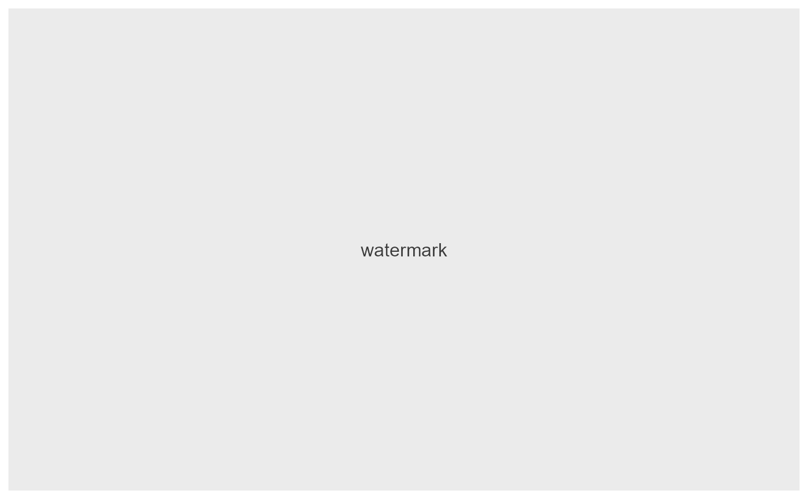
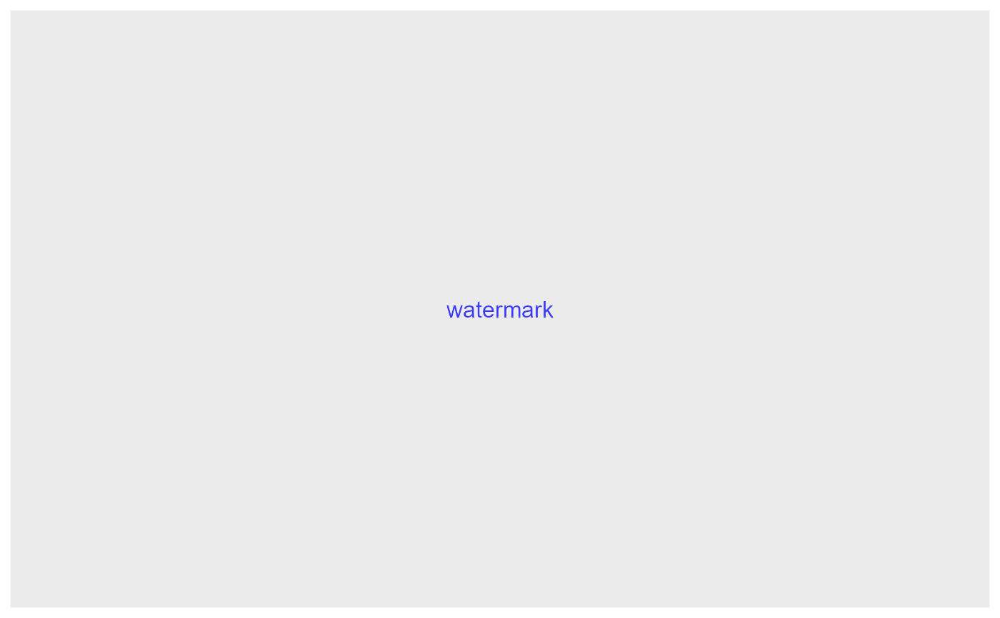
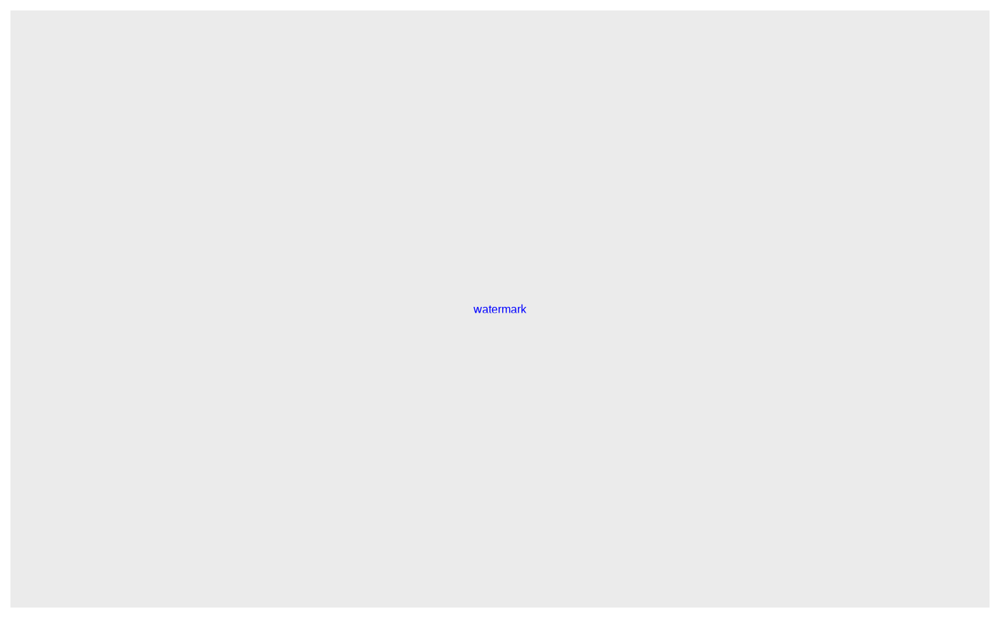

addWatermark creates a ggplot grob based on the label text and its font properties.
Then, adds the grob to the ggplot object input plotObject as a new layer using ggplot2::annotation_custom.
addWatermark( plotObject, watermark, color = NULL, size = NULL, angle = NULL, alpha = NULL )
Arguments
| plotObject | ggplot object to which the watermark is added |
|---|---|
| watermark | Character or |
| color | Color of the watermark label. |
| size | Size of the watermark label. |
| angle | Angle of the watermark label (in degree). |
| alpha | Transparency of the watermark label. Alpha is a numeric between 0 and 1: 0 label is totally transparent, 1 label is totally opaque. |
Value
plotObject ggplot object to which the watermark is added.
Examples
# Watermark with font properties watermarkLabel <- Label$new(text = "watermark", color = "blue") addWatermark(p, watermarkLabel)# Horizontal watermark addWatermark(p, watermarkLabel, angle = 0)# Watermark totally opaque addWatermark(p, watermarkLabel, alpha = 1)# Create a sun as background for (angle in seq(0, 340, 20)) { p <- addWatermark(p, watermark = " >", color = "yellow", angle = angle, alpha = 1 ) }